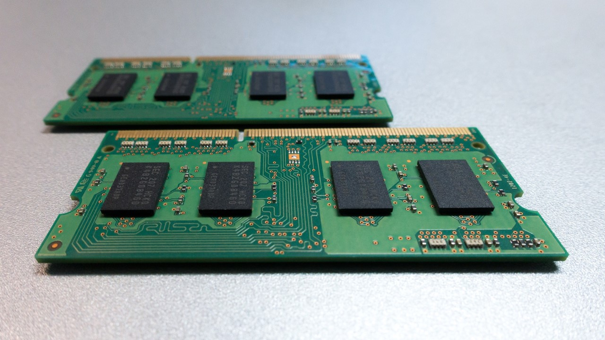

Licenca
To delo je na voljo pod pogoji slovenske licence Creative Commons 2.5:
priznanje avtorstva - nekomercialno - deljenje pod enakimi pogoji.
Celotna licenca je na voljo na spletu na naslovu http://creativecommons.org/licenses/by-nc-sa/2.5/si/. V skladu s to licenco je dovoljeno vsakemu uporabniku delo razmnoževati, distribuirati, javno priobčevati, dajati v najem in tudi predelovati, vendar samo v nekomercialne namene in ob pogoju, da navede avtorja oziroma avtorje in izdajatelja tega dela. Če uporabnik delo predela, kar pomeni, da ga spremeni, preoblikuje, prevede ali uporabi to delo v svojem delu, lahko predelavo dela ponudi na voljo le pod pogoji, ki so enaki pogojem iz te licence oziroma pod enako licenco.

Pomnilnik
Podobno, kot smo vzporedno povezali pomnilne celice, da smo dobili register, lahko vzporedno povežemo pomnilne module, da dobimo pomnilnik (ang. memory). Velikost posameznega pomnilnega modula oziroma število naslovnih vhodov ter skupno število vzporedno povezanih pomnilnih modulov določajo skupno velikost pomnilnika.
Na primer, če za naslov podatka uporabimo 8 bitov to pomeni, da uporabimo 4 bite za dekodirnik vrstic, ki naslavljajo 24 = 16 žic ter 4 bite za dekodirnik stolpcev, ki naslavljajo 24 = 16 žic, to pomeni, da lahko naslovimo 16 × 16 = 256 pomnilnih celic. Če nato vzporedno povežemo 8 takih pomnilnih modulov, bomo lahko shranili skupno 8 × 256 bitov = 2048 bitov informacije.
Pri sodobnih računalnikih smo seveda vajeni, da lahko shranjujemo bistveno večjo količino informacij. Gre samo za to, da iz preprostejših komponent gradimo večje oziroma bolj zapletene komponenete, ki nam omogočajo shranjevanje vednovečje količine informacij. Pri tem se seveda ustreno povečuje tudi število bitov, ki jih uporabljamo za naslavljanje informacij, shranjenih v pomnilniku.

Sicer poznamo dve vrsti pomnilnika. Notranji pomnilnik (ang. primary storage, primary memory), kamor informacije shranjujemo med računalniško obdelavo. Težava notranjega pomnilnika je, da se podatki oziroma informacije, ki so shranjene v njem, izbrišejo, ko zmanjka električnega toka – na primer, ko ugasnemo računalnik.
Poznamo dve vrsti notranjega pomnilnika. Bralni pomnilnik (ang. read-only memory – ROM) iz katerega lahko podatke samo preberemo, ne moremo pa jih vanj zapisovati oziroma shranjevati ter delovni pomnilnik (ang. random access memory – RAM), v katerega lahko shranjujemo in jih tudi preberemo. za dostop do katerega koli podatka pa potrebujemo enako količino časa, za razliko od zaporednih medijev, na primer megnetnih trakov, pri katerih za dostop do podatka, ki je zapisan boj na koncu magnetnega traku, potrebujemo več časa, kot za dostop do podatka, ki je zapisan bolj na začetku magnetnega traku.
Za trajno shranjevanje podatkov uporabljamo zunanji pomnilnik (ang. secondary storage, secondary memory), kot so na primer trdi diski (ang. hard disk drive – HDD) in diskete (ang. floppy disk drive – FDD), CD in DVD diski ter negibljivi diski (ang. solid state drive – SSD), USB ključki in spominske kartice. Uporabljamo pa lahko tudi medije za varnostno kopiranje (ang. backup storage, tertiary memory).